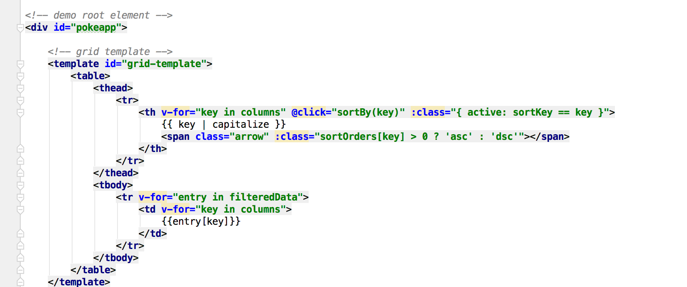
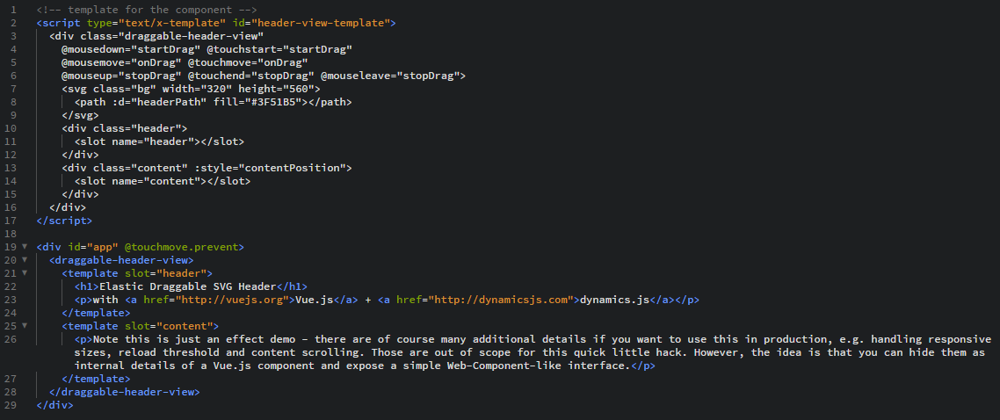
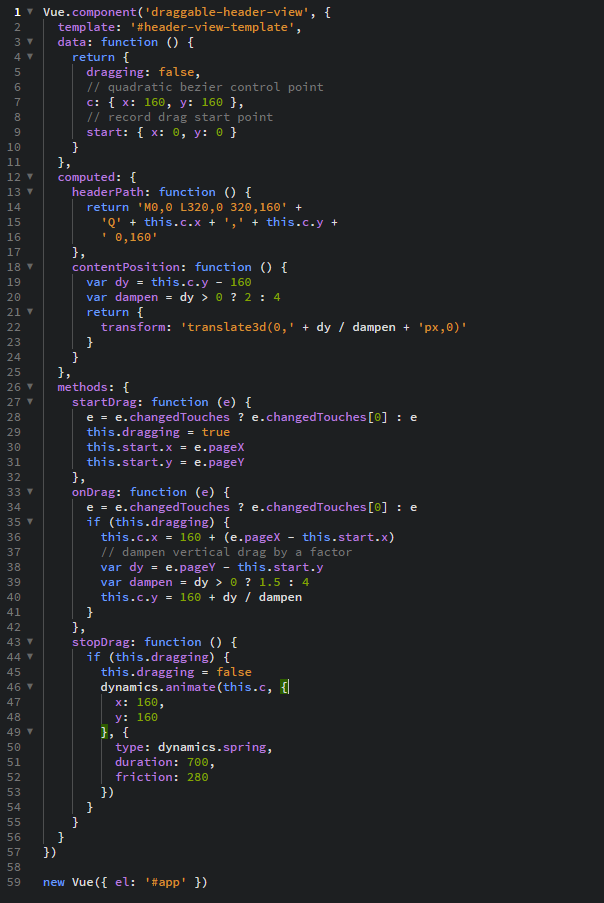
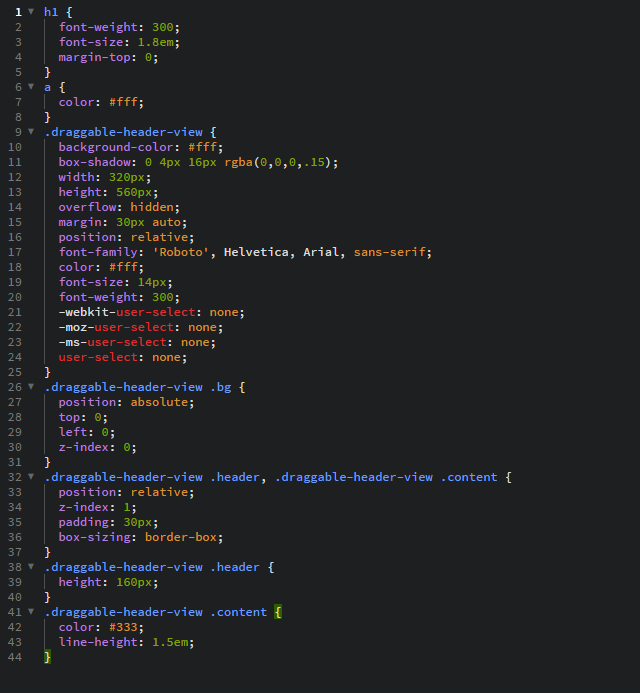

To start implementation of the Pokedex we would have to think about what templates will be used if you are thinking about using it multiple times in the future. We know that we need to create a pokeapp grid based template to store all the data being inserted. So, it is beneficial to program the html template first to get an understanding of the layout.
 The template tag indicates that there will be a template constructed based on an id in the JavaScript file grid-template and the table will generate a grid by using a for loop to go through the columns array. The columns are clickable using @click= and they will call a sortBy(key) function in methods. The columns will be sorted according to the ascending order and capitalized. The :class ={ active: sortKey == key} is a dynamic toggle that will toggle when sortKey == key and returns true. The { { key | capitalize } } is filtering the sorted table head and capitalizing it. Entry[key] inputs all the text into the table and allows for it to be affected by the organization of the ascending and descending of the header after passing through the JS
To implement the draggable header as seen on all of our pages we must make the following HTML, CSS, and JavaScript code.
The following HTML code creates the template for the elastic header component to be used in the JavaScript file later.
The following JavaScript code uses the previous template to animate the header.
The following CSS code just simply styles the page